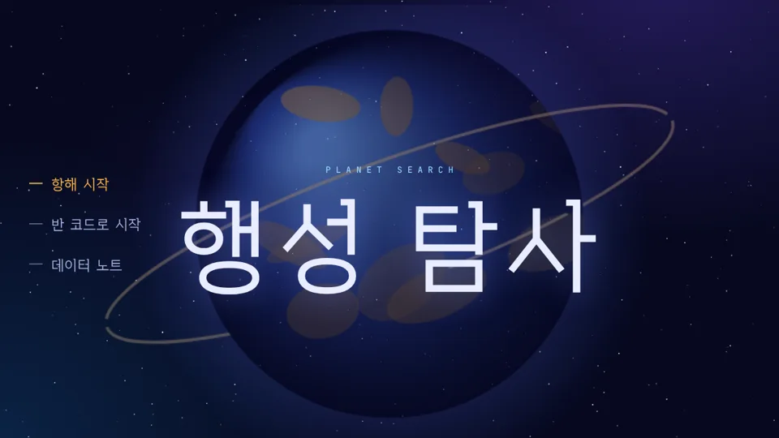

행성 탐사
PLANET SEARCH
외계인 탐사선이 되어 살 수 있는 행성을 찾는 게임이에요. 행성마다 신호, 사진, 소리, 영상을 모아 기록하고, 그 데이터로 종족마다 맞는 행성을 골라 정착시켜요.
- 2진 신호를 풀어 온도, 중력, 산소, 방사선 읽기
- 저장 용량 안에서 사진 화질과 크기 고르기
- 모은 데이터를 표, 막대그래프, 산점도, 벤 다이어그램으로 보기